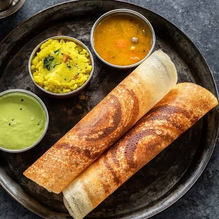

Idly

- 2 cups idly rice
- 1 cup urad dal (black gram)
- 1/2 teaspoon fenugreek seeds
- 1 teaspoon salt
Instructions: Wash and soak rice, urad dal, and fenugreek seeds separately for 6 hours. Grind urad dal to a smooth batter, and rice to a slightly grainy consistency. Mix both batters, add salt, and ferment overnight. Pour the batter into idly molds and steam for 10-12 minutes.
Dosa
- 2 cups dosa rice
- 1/2 cup urad dal (black gram)
- 1/4 teaspoon fenugreek seeds
- 1/2 teaspoon salt
Instructions: Wash and soak rice, urad dal, and fenugreek seeds separately for 6 hours. Grind urad dal to a smooth batter and rice to a slightly grainy consistency. Mix both batters, add salt, and ferment overnight. Heat a non-stick pan, pour a ladle of batter, and spread it in a circular motion. Cook until crispy and golden brown.
Bonda

- 2 cups mashed potatoes
- 1/2 cup finely chopped onions
- 2 green chilies, chopped
- 1/2 teaspoon mustard seeds
- 1/2 teaspoon turmeric powder
- 1/2 teaspoon chili powder
- Few curry leaves
- Salt to taste
- Besan (gram flour) for coating
- Oil for frying
Instructions: Heat oil, add mustard seeds and curry leaves. Add onions, green chilies, and sauté until translucent. Add mashed potatoes, turmeric powder, chili powder, and salt. Mix well and let it cool. Shape the mixture into small balls. Make a thick batter with besan and water. Dip the balls in the batter and deep fry until golden brown.
Upma

- 1 cup semolina (rava)
- 2 cups water
- 1 onion, finely chopped
- 1/4 cup green peas
- 1/4 cup chopped carrots
- 1/4 cup chopped bell peppers
- 2 green chilies, chopped
- 1/2 teaspoon mustard seeds
- 1/2 teaspoon urad dal (black gram)
- Few curry leaves
- 2 tablespoons oil
- Salt to taste
Instructions: Heat oil, add mustard seeds, urad dal, and curry leaves. Add onions, green chilies, and sauté until translucent. Add vegetables and cook until tender. In another pan, dry roast semolina until it becomes fragrant. Add roasted semolina to the vegetable mixture. Add water, salt, and cook until the upma thickens and is cooked through.